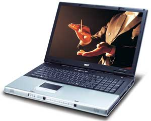
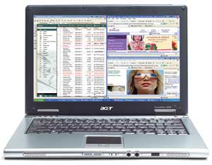
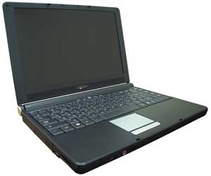
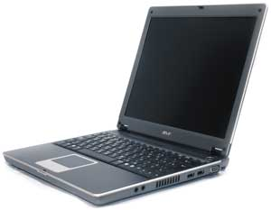
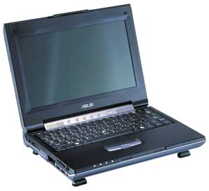

Александр Николов
anikolov@bytemag.ru
Данный материал представляет собой обзор новых моделей портативных компьютеров, появившихся в продаже в период с января по август 2005 г. включительно. Компании и их продукция расположены здесь в алфавитном порядке, без учета объемов продаж, занимаемых долей рынка и прочих экономических показателей. Основное внимание уделено чисто техническим вопросам и определению целевой аудитории для того или иного продукта. Мы рассматриваем по возможности практически все объявленные модели, за исключением тех, которые явным образом нацелены на домашних пользователей (что вытекает из корпоративной направленности журнала).
Acer
Модель Aspire 1690, в которой использованы самые современные технологические решения, можно смело назвать мобильным мультимедийным центром. Компьютеры этой серии поставляются с процессорами Intel Pentium M, работающими на частотах от 1,6 до 2 ГГц. Базой для них служит набор микросхем Intel 915PM Express. Максимальный объем памяти стандарта PC2700 за счет двух разъемов можно довести до 2 Гбайт. Графическая подсистема ноутбука основана на контроллере ATI Mobility Radeon X600 и 64/128 Мбайт независимой видеопамяти. Устройства серии Aspire 1690 оснащаются широкоформатными дисплеями с диагональю 15,4 дюйма и разрешением 1280х800, в которых использована фирменная технология улучшения качества изображения CrystlBrite.
Дисковая подсистема включает универсальный оптический DVD-привод, способный записывать двухслойные диски, и жесткий диск емкостью 80 или 100 Гбайт (в зависимости от конкретной модели). Кроме того, ноутбук оснащен устройством для работы с картами флэш-памяти стандартов Secure Digital (SD), MultiMediaCard (MMC), Memory Stick и Memory Stick Pro.
Телекоммуникационные возможности представлены встроенным модемом стандарта V.92, интегрированным сетевым Ethernet-адаптером, встроенным интерфейсом доступа к беспроводным сетям стандарта 802.11b/g, ИК-портом, а также (в некоторых моделях) интерфейсом Bluetooth.
Для подключения дополнительного оборудования Aspire 1690 снабжен гнездом PCMCIA типа II, портом FireWire и тремя разъемами USB 2.0.
Устройства серии Aspire 1690 имеют следующие габаритные характеристики - 364х279х33,9-38,9 мм и массу 2,95 кг. Стандартный аккумулятор обеспечивает пользователям 3,5 ч непрерывной работы.
Ноутбуки серии Aspire 1800, как и предыдущей, относятся к разряду портативных мультимедийных центров, но на этот раз высшего класса. Корпус Aspire серии 1800 выполнен в стиле нового направления в дизайне ноутбуков Acer, получившего название Folio. По форме он напоминает папку, а цветовое решение выдержано в серебристо-черных тонах, что придает ноутбукам строгость и деловитость.
|  | Aspire 1800 - модель в стиле Folio.
|
Новый уровень работы с мультимедийными приложениями достигается за счет использования в Aspire 1800 комплекса современных технологий. В ноутбуках этой серии реализована технология Aspire Arcade, которая повышает качество воспроизведения музыки и видео и предоставляет новые возможности управления мобильным ПК. Она предполагает, что ноутбук может работать в одном из четырех функциональных режимов: традиционный ПК, режим воспроизведения музыки, видеофильмов, просмотра цифровых фотографий. В режим воспроизведения или просмотра его можно включить без загрузки основной ОС. Управление ноутбуком в этом режиме осуществляется через дополнительный пульт, расположенный на передней панели корпуса, либо через пульт дистанционного управления.
Устройства серии Aspire 1800 оснащены 17-дюйм широкоформатными дисплеями (соотношение сторон 16:10) с разрешением 1440х900. В качестве "двигателя" использована настольная разновидность процессора Intel Pentium 4 с тактовой частотой 3,2 ГГц. Объем оперативной памяти стандарта PC2700 ограничен максимумом в 2 Гбайт, который реализуется с помощью двух DIMM-разъемов. Графический адаптер ATI Mobility Radeon Х600 с 64/128 Мбайт видеопамяти обеспечивает высокий уровень производительности и качества при обработке графической информации.
Дисковая подсистема состоит из оптического привода DVD±RW, совместимого с двухслойными носителями, и жесткого диска емкостью 80 или 100 Гбайт (в зависимости от модели). Ноутбук также имеет встроенный модуль для карт флэш-памяти пяти форматов: MMC, SD, xD-Picture Card, SmartMedia и Memory Stick.
Все модели серии Aspire 1800 оснащены ИК-портом, модемом стандарта V.92, гигабитным Ethernet-адаптером, интерфейсом для работы с беспроводными сетями стандарта 802.11b/g и интерфейсом Bluetooth. Для работы с дополнительным периферийным оборудованием есть возможность установки плат расширения в гнездо PCMCIA типа II с поддержкой интерфейса CardBus, подключения к порту FireWire или соединения с каким-либо из четырех разъемов USB 2.0.
Габариты этих ноутбуков составляют 402х278,3х41-45 мм, масса со встроенным оптическим накопителем - 4,5 кг. От стандартного аккумулятора устройства серии Aspire 1800 работают около 1 ч.
Модель Aspire 3000 представляет собой недорогую замену настольного или офисного ПК начального уровня на базе процессора AMD Sempron. Ноутбук построен с использованием НМС SiS M760GX, процессора AMD Sempron 2800+, 256 Мбайт оперативной памяти PC2700 (расширяемой до 2 Гбайт), 40-Гбайт жесткого диска и комбинированного оптического привода DVD/CD-RW. В качестве видеоадаптера используется встроенное в НМС решение с разделением системной памяти. Ноутбук оснащен широкоформатным 15,4-дюйм дисплеем с разрешением 1280х800 (WXGA) и поддержкой Acer GridVista, повышающей эффективность удобства работы.
Телекоммуникационная подсистема представлена встроенным модемом стандарта V.92 и сетевым адаптером Fast Ethernet. Для работы с периферией Aspire 3000 снабжен гнездом PCMCIA типа II и тремя разъемами USB 2.0.
Масса ноутбука составляет 2,8 кг, его габариты - 364х279х33,9-38,9 мм. Четырехэлементный батарейный блок обеспечивает Aspire 3000 1,5 ч непрерывной работы.
Серия Aspire 5010 предлагается в качестве универсальной замены настольных ПК и сочетает в себе высокую производительность, функциональность и эргономичность. В ноутбуках этой серии реализован ряд фирменных технологий Acer, существенно улучшающих функциональность мобильного ПК.
Некоторые модели серии Aspire 5010 оснащены широкоформатными 15,4-дюйм дисплеями с разрешением 1280х800 (WXGA), выполненными с применением технологии Acer CrystalBrite, которая повышает контрастность изображения и насыщенность цветов, сохраняя при этом энергопотребление на стандартном уровне. Дисплеи формата 16:10 позволяют одновременно выводить на экран больше информации и эффективно работать со сложными электронными таблицами; в то же время они комфортнее для просмотра DVD-фильмов. Однако существуют и более простые разновидности с 15,4-дюйм дисплеями с разрешением 1280х800 без технологии CrystalBrite. Кроме того, потребители могут выбрать модель со стандартным 15-дюйм дисплеем с разрешением 1024х768 (XGA).
Технология Acer Signal Up улучшает качество беспроводной передачи данных по протоколам IEEE 820.11b/g за счет использования антенны особой формы и ее расположения в передней крышке ноутбука. Эта технология гарантирует совместимость ноутбука с современными программными и аппаратными средствами защиты данных, в частности, протоколами CCX и WPA.
В ноутбуках серии Aspire 5010 используются компоненты, сравнимые по мощности с теми, что применяются при создании высокопроизводительных настольных систем, - это современный набор микросхем ATI Mobility Radeon XPRESS 200, процессоры AMD Athlon64 3000+ или Athlon64 3400+ (в зависимости от модели), графический адаптер ATI Mobility Radeon X700 с 64/128 Мбайт независимой видеопамяти. Кроме того, в систему устанавливается 80-Гбайт жесткий диск и двухслойный оптический привод DVD±RW.
Все устройства серии оснащены ИК-портом, встроенным программным факс-модемом стандарта ITU V.92, интегрированным адаптером Gigabit Ethernet и интерфейсом беспроводной связи стандарта 802.11g. Кроме того, опционально возможна установка адаптера Bluetooth.
Для подключения периферийного оборудования ноутбуки Aspire 5010 снабжены гнездом PCMCIA типа III, портом FireWire и четырьмя разъемами USB 2.0. Помимо стандартного аналогового видеовыхода VGA, они имеют цифровой интерфейс с разъемом DVI-D для подключения дополнительного монитора.
Устройства серии Aspire 5010 имеют следующие габаритные характеристики - 361х292,5х347,3 мм и массу 2,95 кг. Литий-ионный батарейный блок мощностью 60 Вт обеспечивает пользователям до 2 ч непрерывной работы.
Модель Aspire 5020 представляет собой дальнейшее развитие идей, заложенных в серию Aspire 5010, в том, что касается передовых мобильных технологий. Она построена на базе истинно мобильного процессора AMD Turion 64 ML-28, что особенно важно при работе от батареи. Отличные возможности обработки видео и графики достигаются за счет использования в Aspire 5020 видеоадаптера ATI Mobility Radeon X700 cо 128 Mбайт независимой видеопамяти.
Все ноутбуки этой серии поставляются с устройствами для считывания карт флэш-памяти шести типов: MMC, SD, xD-Picture Card, SmartMedia, Memory Stick и Memory Stick Pro. Аппараты оснащены широкоформатными 15,4-дюйм дисплеями с разрешением 1280х800, выполненными с применением технологии CrystalBrite.
При габаритах 363х278х24-32,9 мм ноутбуки Aspire 5020 имеют массу всего чуть больше 3 кг. Емкость стандартного аккумулятора позволяет им работать до 3 ч подряд.
Полнофункциональные ноутбуки серии TravelMate 2350 по своей функциональности и стоимости сравнимы с современным настольным ПК, при этом обладают преимуществами в эргономике и мобильности. Эти компьютеры построены на базе НМС Intel 852GM и процессора Intel Celeron M моделей 340, 350 или 360. В них может быть установлено до 1 Гбайт памяти PC2700. Жесткий диск емкостью 40 Гбайт и (в зависимости от конфигурации) комбинированный привод DVD/CD-RW или привод DVD±RW, совместимый с двухслойными дисками, составляют дисковую подсистему ноутбука. В качестве видеоадаптера используется интегрированная в НМС микросхема. Устройства серии TravelMate 2350 оснащены 15-дюйм дисплеями с разрешением 1024х768 (XGA).
Все ноутбуки оснащены модемом стандарта V.92 и Ethernet-адаптером, а в некоторых разновидностях имеется предустановленный интерфейс для работы с беспроводными сетями стандарта 802.11b/g. Из портов расширения имеется три разъема USB 2.0 и гнездо для установки карт PCMCIA типа II.
Корпус TravelMate 2350 выполнен в стиле Folio и имеет размеры 336,4х281,5х32-34,9 мм при массе 2,84 кг. Батарейный блок 32 Вт обеспечивает 2,5 ч автономной работы.
Ультрапортативные мобильные ПК серии TravelMate 3000 построены на базе обновленной платформы Intel Centrino и ориентированы на использование в качестве мобильных рабочих мест для часто путешествующих профессионалов. При массе 1,45 кг и габаритах, не превышающих размеры листа формата A4, ноутбуки TravelMate 3000 отличаются высокими функциональностью и производительностью, продолжительностью автономной работы, а также хорошими коммуникационными возможностями.
|  | Ультрапортативный ноутбук TravelMate 3000.
|
Внутренняя "начинка" серии TravelMate 3000 состоит из набора системных микросхем Intel 915GM с частотой системной шины 533 МГц, процессора Intel Pentium M с индексом 730, 740 или 760 (в зависимости от спецификации), оперативной памяти стандарта DDR2 максимальным объемом 2 Гбайт и жесткого диска емкостью 60-100 Гбайт. Внешний оптический накопитель - либо привод DVD±RW, совместимый с двухслойными носителями, либо комбинированный привод DVD/CD-RW - подключается с помощью интерфейса IEEE 1394. Кроме того, предусмотрено встроенное устройство для работы с картами флэш-памяти стандартов SD, MMC, Memory Stick и Memory Stick Pro. Отдельного графического адаптера нет - используется система, встроенная в НМС 915GM.
Все без исключения модели серии TravelMate 3000 оснащены ИК-портом, встроенным факс-модемом стандарта V.92, гигабитным Ethernet-адаптером, интерфейсом беспроводной связи стандарта 802.11b/g и беспроводным адаптером Bluetooth.
Для подключения периферийных устройств они снабжены гнездом PCMCIA типа II, портом FireWire и тремя разъемами USB 2.0, а также особым 124-контактным разъемом для репликатора портов Acer ezDock.
В TravelMate 3000 может быть установлен либо шестисекционный батарейный блок мощностью 53 Вт, либо 22-Вт трехсекционный аккумулятор. В стандартной комплектации ноутбук обеспечивает пользователю до 4,5 ч автономии. С момента начала поставок TravelMate серии 3000 включены в программу "Ноутбук+" и поставляются с дополнительной батареей повышенной емкости.
Габариты ноутбука - 297,5х210х25-35,5 мм, масса составляет 1,46 кг с трехсекционным батарейным блоком и 1,61 кг с шестисекционным.
Ноутбуки серии TravelMate 4650 являют собой оптимальное сочетание производительности, функциональности и мобильности. Основные технические характеристики их таковы: процессор Intel Pentium M 730, набор микросхем Intel 915GM Express, до 2 Гбайт оперативной памяти DDR2, 80-Гбайт жесткий диск, универсальный оптический привод DVD±RW, совместимый с двухслойными носителями, графический адаптер nVIDIA GeForce Go 6600 с 64 Mбайт видеопамяти, устройство чтения карт флэш-памяти шести форматов (SmartMedia, Memory Stick, Memory Stick Pro, MMC, SD и xD-Picture card), ИК-порт, встроенный факс-модем V.92, гигабитный Ethernet-адаптер, адаптер беспроводной связи Intel PRO/Wireless 2200BG стандарта 802.11b/g и поддержка Bluetooth.
Важное достоинство новых ноутбуков - фирменный отсек для оптического привода Acer MediaBay, позволяющий даже при включенном ноутбуке свободно вынимать привод и заменять его на второй жесткий диск, дополнительную батарею или другой оптический привод.
Четыре разъема USB 2.0, порт FireWire и гнездо для карт PCMCIA типа II позволяют подключить практически любую периферию. Помимо стандартного аналогового видеовыхода VGA для подключения дополнительного монитора, имеется цифровой интерфейс с разъемом DVI-D. Для особых случаев предусмотрен 124-контактный разъем репликатора портов Acer ezDock.
Ноутбуки этой серии имеют массу 2,84 кг при габаритах 336,4х284,5х32,0-34,5 мм. Продолжительность работы TravelMate 4650 от батареи достигает 3,5 ч.
Мобильные компьютеры бизнес-класса из серии TravelMate 8100 адресованы пользователям, которым необходим компактный ноутбук с функциональностью и производительностью настольного ПК. В них использованы процессоры Intel Pentium M с индексами 730, 750 и 760, набор микросхем Intel 915PM Express и модули памяти стандарта DDR2-533, позволяющие довести суммарный объем ОЗУ до 2 Гбайт. Видеосистема ноутбука реализована на базе графического контроллера ATI Mobility Radeon X700 со 128 Мбайт независимой видеопамяти. Широкоформатный дисплей с диагональю 15,4 дюйма обеспечивает разрешение 1680х1050 (WSXGA+). Для повышения качества изображения при работе с современным презентационным оборудованием в ноутбуке реализован цифровой интерфейс DVI-D. Дисковая подсистема состоит из жесткого диска емкостью 60-100 Гбайт и универсального оптического привода DVD±RW с возможностью горячей замены благодаря технологии Acer MediaBay, способного работать с двухслойными носителями. Кроме того, ноутбуки оснащены устройством чтения карт флэш-памяти SD, MMC, Memory Stick, Memory Stick Pro и xD-Picture Card.
Коммуникационная подсистема ноутбуков серии TravelMate 8100 состоит из ИК-порта, гигабитного сетевого адаптера Ethernet, факс-модема V.92, встроенного адаптера беспроводной связи Intel PRO/Wireless 2915ABG стандарта 802.11a/b/g и адаптера Bluetooth.
Аппараты оснащены четырьмя разъемами USB 2.0, портом FireWire и гнездом для карт PCMCIA типа II, что позволяет подключать широкий спектр периферийного оборудования. Кроме того, для подключения репликатора портов Acer ezDock существует отдельный 124-контактный разъем. Наконец, в TravelMate 8100 реализован разъем для идентификационной карты SmartCard.
Габариты и масса ноутбуков серии TravelMate 8100 составляют соответственно 363х265,7х30,5-34,3 мм и 2,86 кг. Для этой серии предусмотрен стандартный 71-Вт литий-ионный батарейный блок и дополнительный 42-Вт опциональный аккумулятор. Время работы от типовой батареи - 4 ч.
Aquarius
Модель Aquarius Virtus NS302 представляет собой компактное экономичное мобильное решение, предназначенное для людей, которым требуется современный легкий (полная дорожная масса аппарата 1,8 кг) портативный компьютер для частой работы вне офиса - в разъездах или командировках.
|  | Экономичное мобильное решение - Aquarius Virtus NS302.
|
Двухшпиндельный аппарат создан на базе набора микросхем Intel 915GM и в зависимости от комплектации может содержать либо процессор Intel Pentium M с тактовой частотой 1,6-1,8 ГГц, либо Celeron M с частотой 1,5 ГГц. Оперативная память ноутбука может быть расширена до 2 Гбайт двумя модулями стандарта PC2700. В качестве графического адаптера используется встроенный в НМС видеоконтроллер Intel GMA 900, обеспечивающий динамическое использование части ОЗУ в качестве видеопамяти. В компактный корпус встроен цветной широкоформатный 12,1-дюйм дисплей с разрешением 1280x800 (WXGA).
Дисковую подсистему ноутбука, стандартно состоящую из комбинированного оптического привода DVD/CD-RW и жесткого диска емкостью от 20 до 60 Гбайт, можно усилить внешним флоппи-дисководом 3,5 дюйма, подключаемым к одному из трех портов USB. Ноутбук имеет встроенное устройство чтения/записи флэш-карт трех самых популярных форматов - SD, MMC и Memory Stick.
Для связи с внешним миром служат встроенный модем стандарта V.90 и сетевой адаптер Fast Ethernet, а также встроенный интерфейс доступа к беспроводной сети стандарта 802.11b/g. Кроме того, ноутбук имеет разъем PCMCIA типа II с поддержкой CardBus для подключения дополнительного оборудования, интерфейс FireWire, а также акустическую систему с разъемами для подключения внешних динамиков и микрофона.
Аккумуляторная батарея обеспечивает почти 2 ч автономной работы ноутбука с офисными приложениями.
Asus
Модель ASUS A3G представляет собой решение, удачно сочетающее черты мобильных и настольных компьютеров и способное полностью заменить любую настольную систему. В ней используются процессор Intel Celeron M с частотой от 1,2 до 1,5 ГГц или Pentium M с частотой до 2,1 ГГц, набор микросхем Intel 855GM и оперативная память стандарта PC2700 с возможностью расширения до 2 Гбайт посредством пары DIMM-слотов. Видеоподсистема построена на базе микросхемы ATI Mobility Radeon 9700 Pro с 64 Мбайт выделенной видеопамяти. Дисплей имеет диагональ 15 дюймов и разрешение 1024х768 (XGA). Интересная особенность этой модели - встроенная CMOS-камера с разрешающей способностью 0,3 Мп.
Дисковая подсистема состоит из жесткого диска объемом до 80 Гбайт и комбинированного оптического привода DVD/CD-RW или универсального устройства DVD±RW - на выбор покупателя. Кроме того, ноутбук оснащен устройством чтения карт флэш-памяти форматов SD, MMC, Memory Stick и Memory Stick Pro.
Модель ASUS A3G оснащена ИК-портом, модемом V.90, сетевым адаптером Ethernet и встроенным адаптером беспроводной сети 802.11b/g. Коммуникационные интерфейсы включают стандартный параллельный порт, четыре порта USB 2.0, разъем IEEE 1394 и гнездо для карт PCMCIA типа II.
Благодаря возможностям платформы Centrino и технологии оптимизации энергопотребления ASUS Power4 Gear+ время автономной работы от батареи составляет порядка 4 ч. Габариты ASUS A3G составляют 328х288х27-38 мм, масса - 2,85 кг.
Компактные и мощные ноутбуки серии M5A станут неплохим выбором для людей, большую часть времени работающих вне офиса. Они построены на базе системных микросхем Intel 915GM и высокоскоростной оперативной памяти DDR2-400 объемом 256 Мбайт (с возможностью расширения до 768 Мбайт) и могут быть оснащены любым процессором Intel Pentium M от 730-й до 770-й модели на выбор. Видеоподсистема базируется на адаптере Intel GMA 900, интегрированном в НМС, и включает в себя 12,1-дюйм дисплей с разрешением 1024х768.
|  | Компактный и мощный ASUS M5A.
|
Жесткий диск емкостью до 80 Гбайт и встроенный оптический привод DVD/CD-RW или DVD±RW, в том числе совместимый с двухслойными носителями, составляют дисковую подсистему M5A. Имеется также встроенный модуль для чтения флэш-карт SD, MMC, Memory Stick и Memory Stick Pro.
Телекоммуникационная подсистема ноутбука состоит из встроенного факс-модема стандарта V.90, Ethernet-адаптера и беспроводной сетевой карты Intel PRO/Wireless 2200BG стандарта 802.11b/g. Интерфейсная часть для подключения периферийных устройств состоит из трех портов USB 2.0, разъема IEEE 1394 и гнезда для карт PCMCIA типа II.
Время автономной работы M5A от батареи составляет около 2 ч при использовании трехячеистой батареи мощностью 27 Вт.ч, примерно 4 ч с шестиячеистой батареей мощностью 53 Вт.ч и до 6 ч с девятиячеистой батареей на 80 Вт.ч. Технология оптимизации энергопотребления ASUS Power4 Gear+ позволяет несколько увеличить эти значения.
Габариты серии - 275х245х23-29,8 мм, масса (с шестиячеистой батареей) равняется 1,75 кг.
Модель M6V продолжает серию M6N/M6Ne/M6С и позиционируется как устройство мультимедийного сегмента с отличными мобильными возможностями, что позволяет применять его и дома, и в офисе, и в частых поездках. В ноутбуке используются процессор Intel Pentium M моделей 730-770, набор микросхем Intel 915PM и оперативная память стандарта DDR2-400 или 533 с возможностью расширения до 2 Гбайт посредством двух DIMM-разъемов. Видеоподсистема построена на базе микросхемы ATI Mobility Radeon X600 с 64 Мбайт выделенной видеопамяти. Ноутбук может быть оснащен либо 15,1-дюйм дисплеем с разрешением 1400x1050 (SXGA+) и соотношением сторон 4:3, либо широкоформатным 15,4-дюйм дисплеем с разрешением 1680x1050 (WSXGA+) и соотношением сторон 16:9.
Дисковая подсистема включает в себя жесткий диск объемом 80 Гбайт и установленный в специальный модульный отсек комбинированный оптический привод DVD/CD-RW или универсальное устройство DVD±RW (по выбору покупателя). Помимо оптического привода, в отсек можно установить дополнительную батарею или (используя специальный адаптер) второй жесткий диск, однако возможность горячей замены устройств не предусмотрена. Кроме того, ноутбук оснащен устройством чтения карт флэш-памяти SD, MMC, Memory Stick и Memory Stick Pro.
Модель ASUS M6V оснащена ИК-портом, модемом V.90, гигабитным сетевым адаптером Ethernet, встроенным адаптером беспроводной сети Intel PRO/Wireless 2200BG стандарта 802.11b/g и адаптером Bluetooth. Коммуникационные интерфейсы включают стандартный параллельный порт, четыре порта USB 2.0, разъем IEEE 1394 и гнездо для карт PCMCIA типа II. Имеется и разъем для подключения порт-репликатора ASUS PortBar III.
В системах M6V применяется технология оптимизации энергопотребления ASUS Power4 Gear+, позволяющая увеличить время автономной работы от батареи на величину до 30%. Благодаря этой технологии, а также возможностям платформы Centrino, время автономной работы от штатной восьмиячеистой аккумуляторной батареи составляет до 4 ч, а от связки "штатная батарея плюс дополнительная" - до 6,5 ч.
Габариты модели - 354х273х22-34 мм, масса ноутбука с 15,4-дюйм матрицей и установленным оптическим приводом - 2,9 кг.
Модель S3N продолжает хорошо зарекомендовавшую себя линейку S200 и представляет собой сверхкомпактный ноутбук для тех, кто большую часть времени работает вне офиса. Основа ноутбука - процессор Intel Pentium M со сверхнизким напряжением питания, работающий на частотах 1,0 или 1,1 ГГц, специальный НСМ Intel 855GMe и оперативная память стандарта PC2700, расширяемая до 1 Гбайт с помощью двух микроразъемов SO-DIMM. Видеоподсистема построена на базе ядра Intel Extreme Graphics 2, интегрированного в НМС. В качестве дисплея используется высококонтрастная широкоформатная 8,9-дюйм матрица с разрешением 1024х600.
|  | Сверхкомпактный ноутбук ASUS S3N.
|
Жесткий диск объемом до 80 Гбайт и комбинированный оптический привод DVD/CD-RW или универсальное устройство DVD-RW составляют дисковую подсистему устройства. Имеется также устройство для чтения карт флэш-памяти формата SD.
Телекоммуникационные возможности S3N реализованы посредством встроенного модема стандарта V.90, Ethernet-адаптера и контроллера Intel PRO/Wireless 2200BG для беспроводной сети стандарта 802.11b/g. Периферийные интерфейсы представлены двумя портами USB 2.0, разъемом IEEE 1394 и гнездом для карт PCMCIA типа II. Кроме того, есть разъем для подключения порт-репликатора ASUS PortBar III.
Время автономной работы ноутбуков серии S3N от штатного трехячеистого аккумулятора мощностью 24 Вт.ч составляет до 2,3 ч, а от расширенной шестиячеистой батареи мощностью 48 Вт.ч - до 3,5 ч. Габариты модели - 235х178х31,5 мм, масса с установленной шестиячеистой батареей - 1,5 кг (в случае трехячеистой батареи - на 100 г меньше).
Компьютеры из серии V6V нацелены на пользователей, нуждающихся в мобильных системах с функциональностью и производительностью настольного ПК. В них использованы процессоры Intel Pentium M с индексами 730-770, набор микросхем Intel 915PM и память стандарта DDR2-400 или 533, объем которой с помощью пары DIMM-слотов можно довести до 2 Гбайт. Видеосистема ноутбука реализована на базе графического контроллера ATI Mobility Radeon X600 со 128 Мбайт видеопамяти, в качестве дисплея в нем установлена 15-дюйм ЖК-матрица с разрешением 1400х1050.
Дисковая подсистема состоит из жесткого диска емкостью 80 Гбайт и универсального оптического привода DVD±RW. Помимо этого, имеется приспособление для работы с картами флэш-памяти SD, MMC, Memory Stick и Memory Stick Pro.
Коммуникационная подсистема ноутбуков серии V6V состоит из ИК-порта, гигабитного сетевого адаптера Ethernet, факс-модема V.90, встроенного адаптера беспроводной связи Intel PRO/Wireless 2200BG стандарта 802.11b/g и адаптера Bluetooth. Модели этой серии оснащены четырьмя разъемами USB 2.0, портом FireWire и гнездом для карт PCMCIA типа II, что позволяет подключать широкий спектр периферийного оборудования.
Габариты ноутбуков серии ASUS V6V составляют 331х272х25,4-30,0 мм, масса - 2,55 кг. Время работы от стандартной батареи - в среднем около 2,5 ч.
Серия W3V относится к разряду портативных систем с расширенными мультимедийными возможностями. Мобильная и мощная одновременно, благодаря достаточно большой продолжительности автономной работы она неплохо подойдет на роль замены ПК для тех, кто не хочет связывать себя постоянным нахождением в офисе.
Компьютеры этой серии поставляются с процессорами Intel Pentium M от 730-й до 770-й модели. Базой для них выступает набор микросхем Intel 915PM, позволяющий с помощью пары разъемов SO-DIMM нарастить максимальный объем памяти стандарта DDR2-400 или 533 до 2 Гбайт. Графическая подсистема ноутбука построена на базе контроллера ATI Mobility Radeon X600 и 128 Мбайт видеопамяти. Аппараты серии W3V оснащаются дисплеями со "стеклянными" широкоформатными матрицами диагональю 14 дюймов. Используемые в них технологии Color Shine и Crystal Shine позволяют улучшить цветопередачу, глубину и насыщенность цвета, добиться более чистого и резкого изображения.
Дисковая подсистема ноутбука включает жесткий диск емкостью до 80 Гбайт и либо комбинированный DVD/CD-RW, либо универсальный DVD±RW оптический привод, устанавливаемый в специальный отсек с возможностью горячей замены устройств. Кроме них, в этот отсек можно вставить дополнительную батарею или (с помощью специального адаптера) второй жесткий диск. В дополнение ноутбук оснащен устройством для работы с картами флэш-памяти стандартов SD, MMC, Memory Stick и Memory Stick Pro.
Телекоммуникационные возможности W3V представлены встроенным модемом стандарта V.92, интегрированным гигабитным Ethernet-адаптером, встроенным интерфейсом Intel PRO/Wireless 2200BG для доступа к беспроводным сетям стандарта 802.11b/g, ИК-портом и интерфейсом Bluetooth. Для подключения дополнительного оборудования ноутбук снабжен гнездом PCMCIA типа II, портом FireWire и тремя разъемами USB 2.0.
Время автономной работы от штатной восьмиячеистой аккумуляторной батареи мощностью 71 Вт.ч доходит до 4 ч; в связке штатная батарея плюс дополнительная - до 6 ч. Используемая в W3V технология оптимизации энергопотребления ASUS Power4 Gear+ позволяет увеличить время автономной работы от батареи на 30%.
Габариты устройств серии W3V составляют 330х247х30-32,7 мм, масса с оптическим приводом равна 2,4 кг.
Модель W5A позиционируется как мощное компактное устройство для мобильных пользователей, часто и помногу бывающих в деловых поездках. Она построена на базе последних моделей процессора Intel Pentium M - с индексами от 730 до 770, НМС Intel 915GM и оперативной памяти стандарта DDR2-400 с возможностью расширения до 1 Гбайт при помощи 200-контактного разъема SO-DIMM. Видеосистема Intel GMA 900 интегрирована в НМС, позволяя задействовать в качестве видеопамяти до 224 Мбайт ОЗУ. В качестве дисплея на ноутбуке установлена широкоформатная "стеклянная" ЖК-матрица диагональю 12,1 дюйма с разрешением 1280x800 (WXGA) и увеличенной яркостью экрана. Помимо этого, в оснащение ноутбука входит поворачивающаяся Web-камера с разрешением 1,3 Мп, предназначенная для проведения видеоконференций.
Дисковая подсистема W5A состоит из жесткого диска объемом до 80 Гбайт и, по выбору покупателя, либо комбинированного оптического привода DVD/CD-RW, либо универсального устройства DVD±RW, в том числе способного работать и с двухслойными дисками. Ноутбук также оснащен устройством чтения карт флэш-памяти SD, MMC, Memory Stick и Memory Stick Pro.
Модель W5A оснащена встроенным модемом стандарта V.90, сетевым адаптером Ethernet, адаптером Intel PRO/Wireless 2200BG для работы с беспроводными сетями стандарта 802.11b/g и (опционально, в некоторых конфигурациях) адаптером Bluetooth. Интерфейсная часть ноутбука включает три порта USB 2.0, разъем IEEE 1394 и гнездо для карт PCMCIA типа II. Имеется также встроенный RF-модуль, функционирующий на радиочастоте 27 МГц и предназначенный для работы с беспроводной мышью.
Время автономной работы ноутбука от трехячеистой аккумуляторной батареи мощностью 27 Вт.ч составляет примерно 1,8 ч, от шестиячеистой мощностью 53 Вт.ч - до 3,5 ч, а от девятиячеистой батареи на 80 Вт.ч - все 5 ч. Для более эффективного расходования заряда в системах W5A применена технология оптимизации энергопотребления ASUS Power4 Gear+.
Габариты ноутбука, оснащенного шестиячеистой батареей, составляют 305х230х31 мм, масса - 1,8 кг.
На этом первая часть обзора новинок мобильных компьютеров завершена. В ближайших номерах мы рассмотрим обновления в модельных рядах компаний IBM, HP, MSI, Prestigio и Samsung.